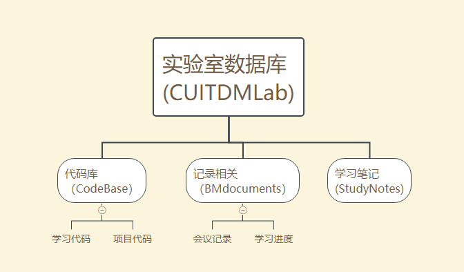

简介
硕士生导师 郑皎凌
【个人简介】
郑皎凌，女，副教授，生于1981年，中共党员，研究生学历，博士学位。学习计算机专业，获计算机科学与技术专业工学博士学位。现任四川省计算机学会大数据专委会委员.
【研究方向】
1．04(全日制)智能信息处理与知识工程
2．01(全日制)大数据分析与服务
【在研项目】
四川省教育厅重点课题，虚拟社会中个体间往复交互模式挖掘及其对虚拟社团形成和发展的影响 项目负责人
【完成项目】
1．社群大规模协作认知规律和演化模型挖掘，国家自然科学基金青年基金项目，项目负责人，2015年12月完成。
- 基于干预技术的复杂系统可信演化模型挖掘 四川省教育厅青年基金项目，项目负责人，2013年12月完成。
【发表论文】
1、郑皎凌、唐常杰、乔少杰、杨宁、李川、陈瑜、王悦 ，基于扰动的亚复杂动力系统因果关系挖掘 ，计算机学报, 12期,pp 2548-2563, 2014/12/15 ，EI
2、郑皎凌、舒红平、许源平、乔少杰、文立玉 ，基于社群联盟的冲突消解原则求解图着色问题,电子科技大学学报(自科版)，45(1)，pp 2-16，2016/1/1，EI
3、郑皎凌、舒红平、许源平、乔少杰、文立玉 ，Cooperation Oriented Computing: A Computing Model Based on Emergent Dynamics of Group Cooperation ，Big Data Technology and Applications, 2015/12/25-2015/12/26, pp 218-233, 2015/12/25, EI
4、Jiaoling Zheng，Changjie Tang，Shaojie Qiao，Ning Yang，Yue Wang,Mining Multi-scale Intervention Rules from Time Series and Complex Network,《International Journal of Computational Intelligence Systems》 , 2011 , 4 (4) :728-738，SCI 000297795000025
实验室索引
本文档主要作为“实验室数据库”的一个检索目录，以及功能介绍，本数据库依托gitlab总共有三方面的功能：

- 《实验室数据库》的根目录是：https://gitlab.com/CUITDMLab
- 《实验室数据库》的“代码库”地址是：https://gitlab.com/CUITDMLab/CodeBase
- 《实验室数据库》的“记录相关的库”地址是：https://gitlab.com/CUITDMLab/BMdocuments
- 《实验室数据库》的“学习笔记”：https://gitlab.com/CUITDMLab/StudyNotes
CodeBase：储存学生期间做项目，打比赛的代码与数据。
实验室代码与数据请放到GitLab群组下：https://gitlab.com/CUITDMLab/CodeBase ，另外完整的项目请单独开一个“项目”，如果是学习代码，比如像学习了《机器学习实战》自己写的课后代码也请在该目录下新建项目。
BMdocuments：记录会议记录、每位同学的工作进度（一周一次）。
会议记录：请fork在项目BMdocuments，会议记录有学生记录并由老师确认后上传到GitLab。会议记录主要写开会的内容，以及每位学生下一周的学习任务。
学生学习进度：请fork在项目BMdocuments，学生不可以修改会议记录文件夹，只可以修改学生工作文件夹中属于自己的文件。学生工作进度分为两个部分：一、老师安排任务的完成情况。二、本周的学习情况（学了什么，有什么问题？）
StudyNotes：记录学习笔记，学习经验。
参考 https://github.com/Jack-Lee-Hiter/AlgorithmsByPython 将学习的总结写到库中StudyNotes